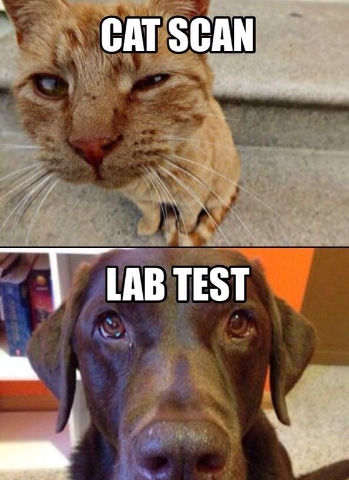

Jokes
Jokes about medicine that have been told to me since I became a doctor.
- Did you know when you die, the last part of your body to stop working are your pupils. Because pupils dilate.
- I don't think my girlfriend likes it when I take my schizophrenia meds... every time I do, she goes away.
- A chameleon walks into my clinic. Green. I ask him why he isn't camoflauged. He says he's been having a hard time changing color recently. Diagnosis: A reptile dysfunction.
- A pig comes into the clinic, limping. Diagnosis: Pulled hamstring.
- Why did the banana go to the doctor? He wasn't peeling well.
- Where do you find patients playing peekaboo? ICU.
- The 6 year-old in the emergency department ate 6 horse figurines. Condition?... stable
- I saw a gingerbread man in my clinic with a sore knee... I told him he should try icing it.
- A patient came to the ER on 31 October with RLQ pain. I told her "appy Halloween"
- Did you hear about the patient with left side hemiplegia?... Well he's all right now.
- Why did the amitriptyline cross the road? To get to the other side... effect.
- A gastroenterologist walks into a bar. The bartender says, I'd offer you a booth, but I'm sure you'd prefer a stool.
- I know a good joke about HIPPA... I can't tell it to you though.
- What do you call rhinorrhea when it goes away?... Gonorrhea
- While performing cognitive testing on a pirate patient, I asked him to recite the alphabet... He did pretty well at first, but got lost at C
- A pirate came to see me one year after his 79th annual well-visit. I asked him, "How old are you now?"... He said, "Aye matey"
- How do veterinarians send their patients to a specialist? With a rufferal.
- Bad news, looks like you have cancer and alzheimer's. -- "Well, at least I don't have cancer."
- Doc, I keep having this recurring dream. Some nights I'm a teepee and other nights I'm a Wigwam. -- "Relax. You're two tents."
- The same patient came back complaining he felt like a pair of curtains. I said, "Well pull yourself together man."
- Why do Irish physicians recommend against eating more than 239 beans at once?... One more would be too farty.
- What's the difference between an enzyme and a hormone?... You can't hear an enzyme.
- I told my patient that if he's ever feeling paranoid, he's not alone.
- A patient of mine died due to blood loss. If only I'd known his blood type.... Guy was a trooper though. He kept telling me to be positive.
- I recommended a patient go on a diet to lose weight. She told me that would be a little hard. She "had a lot on her plate right now."
- I told a diabetic patient her sugar was too high, so she went home and put it on a lower shelf.
- I met a frail old man who'd never worn shoes in his life. He said he was a lonely wizard that could never find love because he one broke a witch's heart and she cursed him with the worst bad breath. He was, in fact, a super callused fragile mystic hexed with halitosis.
- One of my patients worked as a waitress. She needed to have an amputation of her right leg and she was worried about losing her job. I told her she could always go work at IHOP.
- A lady told me her child threw some omega 3 capsules at her. Her injuries were only super fish oil... The kid threw the capsules just for the halibut.
- What kind of doctor was Dr. Pepper? A Fizzician. Later he became a poptometrist
- What would you make if you boiled my ulnar nerve? Laughing stock
- Does an apple-a-day keep the doctor away? Only if you aim well enough
- Why don't ants get sick? It's because they have little antibodies
- I saw a patient who complained of erectile dysfunction. I asked him what he had tried so far. He said he'd tried searching for it on the internet, but nothing came up.
- I saw a patient who said he'd broken his leg in two places. I suggested he not go to those places anymore.
- My halitosis patient's first date went poorly. I told him it was probably not mint to be.
- "Doctor I think I have kleptomania." -- "Well you should probably take something for that."
- What do you call a cancer doctor who's always getting called in by his patients? An "on-call-ogist"
- A elderly woman was very worried about her height loss and she frantically tried to get an earlier appointment. I told her she'd just have to wait and learn to be a little patient.
- A man went in to see a pirate doctor concerned about the eight spots on his back. The doctor counted them and said, "There be nine."
- I gave the lab results to my patient over the phone and told her she'd need to see a doctor. She asked, "Which doctor" and I replied, "No, just the regular kind."
- What do dentists call X-rays? Tooth pics
- How much do the bones in the human body weigh? A skele-ton
- I told the doctor I wanted to sew my own laceration. She handed me the kit and said, "Sute yourself."
- I knew you'd diagnose me with hyperkyphosis! "How did you know that?", "I just had a hunch."
- What do you call an eye-doctor living on an Alaskan island? Optical Aleutian
- As soon as I walked into the clinic room, the doctor told me "You have a severe iron deficiency." I asked "How do you know that?" He said, "Your shirt is all wrinkled."
- Another doctor told me that childbirth is the most painful thing someone can experience. I said, "Maybe I'm too young to remember, but I don't thikn it hurt that much..."
- The doctor told me to cut back on my sodium intake. I took his advice with a pinch of salt.
- The doctor said to me, "Your brain seems to have deleted all information about 80's pop music!" I said, "Yikes, what's The Cure?" He replied, "Oh God, it's worse than I thought!"
- Why did Shamoo go to the doctor? He wasn't feeling whale.
- What did Shamoo tell the doctor? He talked to the doctor about all his whale-ments.
- What do you call an Egyptian who works on people's backs? A cairopractor
- A man takes his wife to get tested for the coronavirus and several other things. 2 days later he gets a call from the lab: "I'm very sorry, but we mixed up the tests. We're not sure if she has COVID-19 or Alzheimers disease." "Well what should I do?" the man asked. The doctor thought for a moment then said, "I'd recommend taking her for a long walk and leaving her, if she finds her way back home, don't open the door."
- Today the doctor told me that the bottom of my heart has stopped functioning. My wife will be disappointed; that's the part I loved her from.
- What do you call the ultimate fish doctor? The sturgeon general.
- An amnesiac looking for a cure asked his doctor what he could do. The doctor said, "Pay me first"
- So a woman is 3 pregnant when she falls into a coma. she awakes 6 months later and asks about her baby. The doctor assures her that everything went fine and she has twins, a boy and a girl! He tells the woman that since she was unconscious her brother named the kids. "Oh No!" the woman said "My brother is an idiot! What did that dummy name them?" "he named the girl Denise" the doctor told her. "well thats not so bad the woman said, and the boy?" "danephew"
- A man goes to the psychiatrist wearing only seran wrap. The psychiatrist tells him, "I can clearly see your nuts."
- Breastfeeding sucks, but at least you're making good mammaries.
- Doc calls her husband. The husband asks, "How is she?". The doc responds, "Well she's pretty critical..." The man replies, "Oh... Yeah, you get used to it."
- A frog comes to the doctor, worried that he may be ashkenazi jew and have increased risk factors. I worked up his geneology. Turns out he's a tad polish.
- "Doctor help! My son's been eating electrical wires. What should I do?"... "Ground him, until he conducts himself properly."
- A baby was born without eyelids. After circumcision, the plastic surgeon was able to reconstruct the eyelids with the foreskin. I think he botched it though... The kid's a bit cock-eyed.
- Did you hear the joke about the deaf guy? Neither did he.
- Pregnancy, a 40 week body building program.
- Why do nurses bring red crayons to work? To use in case they draw blood.
- During his colectomy, a patient suddenly awoke and escaped from the OR and ran down the hallway into the chapel, but the surgeon caught him by the organ.
- During admission, I was asking a patient about his religious preferences. He said he only believed in 12.5% of the bible. He told me he was an eighth-theist.
- A pirate was getting admitted. He had a peg leg, hand-hook, and an eye-patch. While getting his medical history, I asked him to explain his missing features. He replied, "Arrr, the leg I lost during a battle with the Navy--blown off by cannon fire. Me hand I lost when I was captured by the british navy, tied to the mast. I had to knaw off me hand to get away..." "What about the eye?" "The eye? T'was mutiny. I was marooned on a deserted island and while laying on the beach, a seagull came and pooped in me eye." "That's ridiculous, no one loses an eye from bird muck." "T'was me first day with the hook."
- I told my patient to stop using Q-tips, but it only went in one ear and out the other.
- He paid the doctor so much money for the circumcision, but it still came out looking weird. What a rip-off.
- A patient came with with a pet clam on a leash. I told him, "you've got a pulled mussel."
- A patient complained of irregular bowel movements. I diagnosed him with all kinds of weird shit.
- Dark humor is like affordable heatlthcare. Some people don't get it.
- Kids are born with 4 kidneys. When they get older 2 of them become adult knees.
- I tried to call my doctor about my tinnitus, but the phone just rang and rang.
- A kid came in to the clinic after he was involved in a pillow fight. He had a concushion.
- A bald man lay dying. He called in his children for one last word. "I fear that the forest around us grows thinner and will one day be just as bald as my head. Please see to it that whenever a tree falls in this forest, a new one is planted in it's stead. Thenceforth the forest grew in size all thanks to one man's re-seeding heirline.
- Death came for my patient last night, so I challenged him to a pillow fight. I was not ready for the reaper cushions.
- An old man on his deathbed calls together his family. "My darling wife are you here?" he asks. "Yes dear, I'm here", she replies. "And my son, are you here" he gasps. "Yeah dad, I'm right here." "My darling daughter are you here?" "Yes daddy, I'm here". The man says, "Well, if you’re all here, why the hell are the lights on downstairs!?"
- 